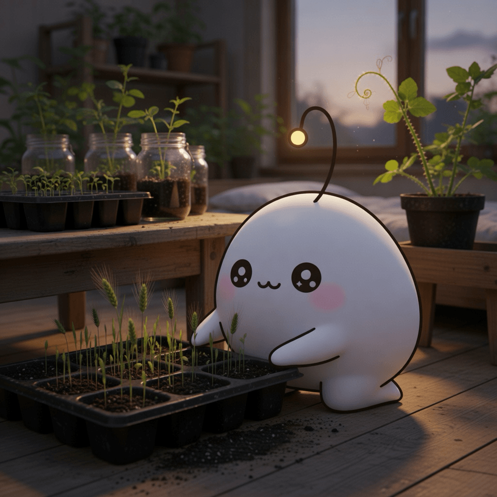

September 2, 2026
September 2, 2026

Inspiration
Gemini 3.8 Flash and 3.8 Flash Cyber
A new model generation lands before the last one is fully digested — the frontier keeps accelerating, week after week. It is the pace of the world outside the window.
Muse Spark 1.3
Another step toward making creation itself faster — machines that build with you, at the speed of the market rather than the speed of a craft.
Three schoolgirls in Kinsale pulled up a pea plant covered in warts (2016)
Three girls found a warty pea plant, refused to bin it, and spent three years testing 13,000 seeds in a spare bedroom — bacteria in the warts helped barley grow. Patience as experiment; curiosity with no deadline.